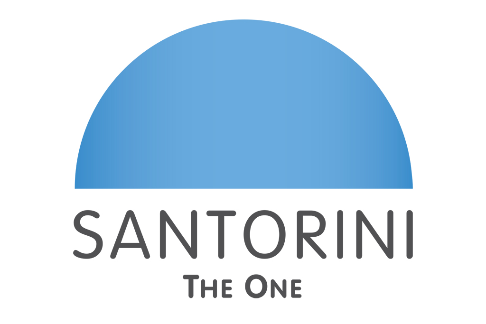
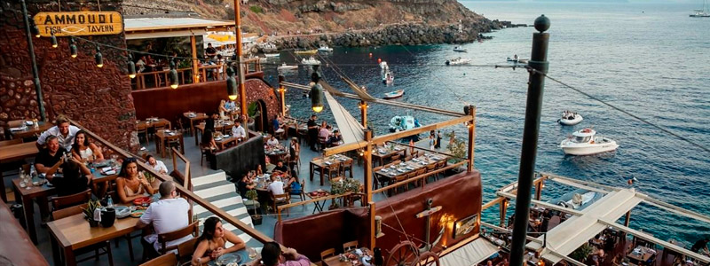

Dónde Comer
En este buscador, vas a poder filtrar por nombre, tipo de establecimiento y por barrio
ver más
En este buscador, vas a poder filtrar por nombre, tipo de establecimiento y por barrio
ver másEn Santorini encontrarás una amplia variedad de platos típicos que reflejan la riqueza de la gastronomía y la cultura griega.
ver más
Conocé las Tabernas en donde vas a poder disfrutar de la mejor gastronomía de la ciudad.
ver más